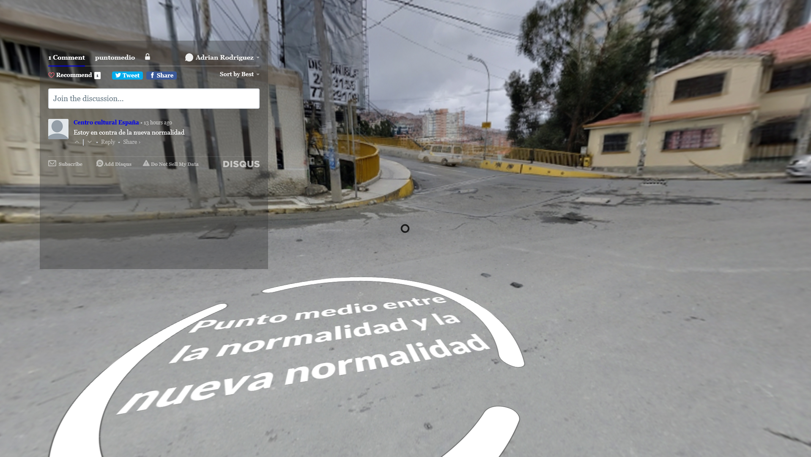

El seductor punto medio
Autor: Adrián E. Rodríguez
Medio: Pieza interactiva e intervención urbana
Año: 2020
Pieza interactiva en el siguiente link: El seductor punto medio
La pregunta por la existencia de la verdad es una pregunta que nos acompaña desde los inicios del pensamiento humano. Una concepción de la verdad que resulta conflictiva de abordar es el problema de la verdad por consenso. En esta se plantea que “Lo que es universal entre los hombres lleva su parte de verdad” (Ferm, 64). En las redes sociales he percibido un deseo (apoyado en discursos relacionados con la idea de la existencia de un “sentido común” inherente a cada ser humano), de considerar el punto medio entre dos posiciones como la última verdad. El crecimiento de las fake news en tiempos de pandemia y la programación de las redes sociales que pre-dirigen a cada usuario a una caverna de ecos han exacerbado las diferencias para un consenso de realidad. La verdad por consenso se enfrenta a la falacia del punto medio en un mundo de verdades construidas de manera cada vez más aislada. En esta obra se explora mediante realidad aumentada ¿disminuida? los deseos, imposibilidades, quiebres y juegos que permiten el acto de imaginar posibles puntos medios.
Bibliografía:
- Ferm, Vergilius (1962), "Consensus Gentium", Runes (1962).